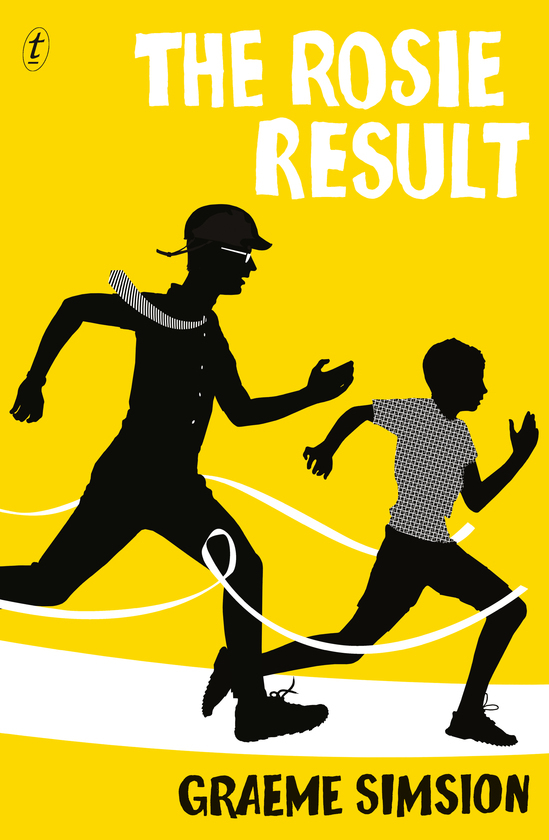

The Rosie Result
⭐️⭐️⭐️
As a person who can relate to some of the struggles of the parents in this book, I enjoyed this book far more than the second book in the series, but not as much as the first book. Don and Rosie are struggling to work with their son with autism (or maybe not), and navigate parenthood, with that additional element.
I rate this 3.5 stars, but it needs to below the first, so a 3 instead.
- Previously: The Rosie Effect
- Next: The Elephant Whisperer